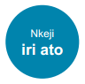
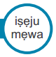
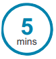
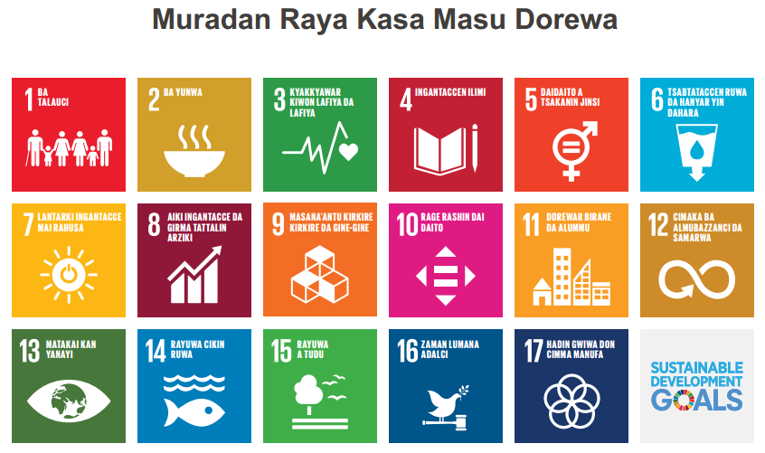

Muradan Raya Kasa Masu Dorewa
“muna karkashin samai daya, bamu da wani wurin zuwa bayan wannan idan mun yi amfani da basiran mu sosai, lallai ne bamu bukatar wani guri daban. Idan mun lura da yanayi, da kuma kula da junanmu, zamu
gane cewa duk abubuwan da muna bukata suna nan tattare da mu”

Gabatarwa da Muradan Raya Kasa Masu Dorewa
Darashi
Za a iya amfani da wannan darashi wajan taruwan jama’a ko kuma ajin tautaunawa ko kuma ajin gudanar da ayukan koyarwa.
Domin karin bayani
A tuntube wannan bangari akan SDGs www.globalgoals.org
Dukan Lokaci:

Abubuwan da za koya
Dalibai zasu iya bayyana menene Muradan Raya Kasa masu Dorewa (SDGs) da kuma sani amfanin su.
Yin sharwara akan yanda za’a koyar da SDGs:
• Wallafaifyar littaf SDGs na yara
• Darassa na musamman domin zurfn
bincike gamai da SDGs a hada su da wasu
Karin bayanai na tartara bayanai.
• Ma’ajiya na tara hutona na SDGs
• A kartata yara su dauki mataki
Ziyarci: http://worldslargestlesson.globalgoals.org/resources-for-teaching-the-sdgs-in-nigeria/
Otu Afo:

Njikere
O buru na ọga ekwe omume biputa ma gosi SDGs na ihu ime ụlọ màọbụ na ihu enyò na ejiri ozi mgbakwunye abụọ màọbụ ato. Dokwa boọdụ iji dee nchepụta ụmụ akwụkwọ. Biputa màọbụ see obere akwụkwọ ihe nwere akụkụ ano maka emume ihe na ato ọchị ikpeazụ.
Gabatarwa da SDGs
Gabatarwa 
A yayin da dalibai sun shiga aji ko daki a yi wadanan tambayoyin – ‘Wanne irin baban damuwoyi ne
alummai da suna karkaran mu/ kasashen mu/ koma duniya baki daya suna fuskanta?’
A karfafa yaran su yi tunani ta lura da ra’ayoyin wasu allal misali zaka iya cewa “ina so yi tunani kamar
kai ne shugaban kasa!” ko kuma “ina so kayi tunani idan kana ikon chanza wasu abubuwa”.
A cikin rukuni, dalibai su yi kakari ftan da wasu damuwoyi da yana alummarsu, kasar su, ko duniya gaba
daya suna fuskanta. Dauki shawara daga wani rukuni. Za a iye rubuta shi a gaba akan allo.
Yi amfani da appendix 1 idan zai yi amfani.
SDGs 
A nuna wa dalibai SDGs, a ftar bukatun da suna nasaba da wanan damuwoyi suka nuna abaya, A
danganta damuwiyi da aka lissafa a jere da na SDGs da an zana a gaban su.
A wajan taruwa jama’a za ka iya zabi dalibai (17) goma sha bakwai su juya baya a ajin a tsaye. Ko wani
dalibi zai rubuta matsala daya a fli takarda da ke tattare da SDGs da lambar su. Idan aka damile damuwa
wanda yana hade da kowace manufa sai ya juya.
Fahimtar SDGs 
Dalibai zasu kalli Mallam Ken Robinson da zanen da yayi akan baban allo, ko kwanfuta. Ko kuma a kasa dalibai zuwa rukuni da ya su kalli hotunan a wayar hannu. Ko kuma su ziyar ci a ranar gizo kamar haka http://worldslargestlesson.globalgoals.org/resources-for-teaching-the-sdgs-in-nigeria. Dalibai sun kuma iya karanta a littafn hoto daga www.globalgoals.org/worldslargestlesson, za tawuwa kasa har karshe a wayar hannu ko tablet.
Ayuka
1. A karshen darashin dalibai su rubuta jimloli mai nuna fahimtar su akan SDGs da kuma bayana ko
menene wadanan tarnakin suna nuf. A kaidace yawan kalmomin da dalibai zasu yi amfani da su wajan
rubutun su kuma bude akwatin bayanai ko tweet Twitter: @WorldsLessonNG #WorldsLargestLessonNG
2. A zana shatale akan faifa. a takaice 12cm x 12cm a bayar kowace dalibi faifan shatalen wanda ba a
yi komai akai ba, ka bukace su su zana hoto na basoransu guda daya tak ta amfani da zafn ikon su a
tambaye su su hada da labarun bangarin gannau da kuma nuna nasu tunani ta yanda zasu taimaka
wajan SDGs. Karbi zanensu a kuma wallafa shi a allon labarai na makaranta ka kuma yada shi a
facebook @WorldsLessonNG.
Damuwoyin Da Suna Shaf Mutane
Duniyar Mu Ta Yau
(Yi amfani da shi kullum)
• Talauci
• Banbanci tsakanin kasashe
• Yunwa
• Gurbanar yanayi da cututuka
• Gurbantaciyar rawa
• Tsafta ce muhalli
• Rashin ingantacen ilimi (wasu dalibai ma basu zuwa makaranta)
• Karancin Albashi da kuma ayukan yi
• Kararancin arzikin kasa wasu kasashe basu samun kudin domin biyan bukatun su
• Banbancin jinsi (Maza da mata ba a basu dama)
• Yaki fadace-fadaci
• Babu kwanciyar hankali ga jama’a (Mutane)
• Barna tsakanin mutane
• Cin hanci da rashawa
• Rashin lura da hakin dan adam
• Rashin hadin kai tsakanin kasashe da kuma yarjejeniya a tsakanin su.
• Rashin wadatatciyar wutar latiriki
• Gurbataciyar muhalli, rashin cin gaba cikin fasha da sadarwa
• Rashin tsafta a birane da kauyuka
• Rashin cin gaba a gina birane wanda zai alumma daga kowace bangari
• Gurbatattacin muhalli da bolla
• Dumamar yanayi
• Mashara mai inganci
• Rashin wadattaciyar ilimin fasaha, tsadar amfani da wayar salula, da kuma dammar amfani da
na’ura mai kwakwalluwa (kwanfuta)
• Gurbatatcin rowan kogi da tafki
• Rashin ingantacen tsaro ga alumma
• Rashin tazara cikin haifuwa
• Babancin launin fata
• Rashin Adalci cikin a’lummomi daban daban
